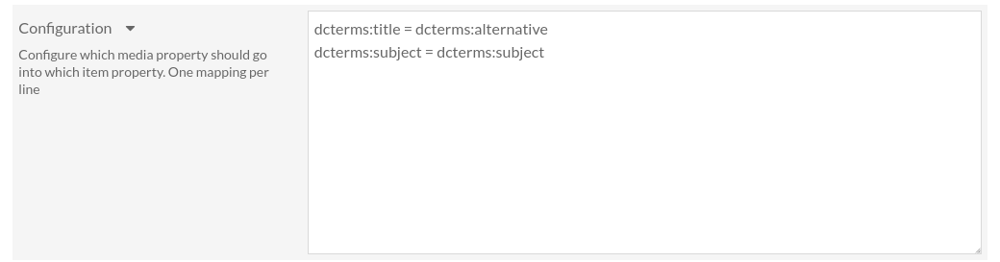

Configuration
Configuration can be found in the module configuration page. Log in to the admin interface, go to the “Modules” page, find OaiPmhRepository Media Property Mapper and click on the “Configure” button.
Here you can configure which media properties will be exposed, and how they will be exposed.
The configuration format is simple. It is a list of mappings, one per line, where each mapping is in the form source = destination.
source is the media property and destination is the property in which it will be exposed.
For instance, dcterms:title = dcterms:alternative means the media title
will be exposed as the item alternative title.